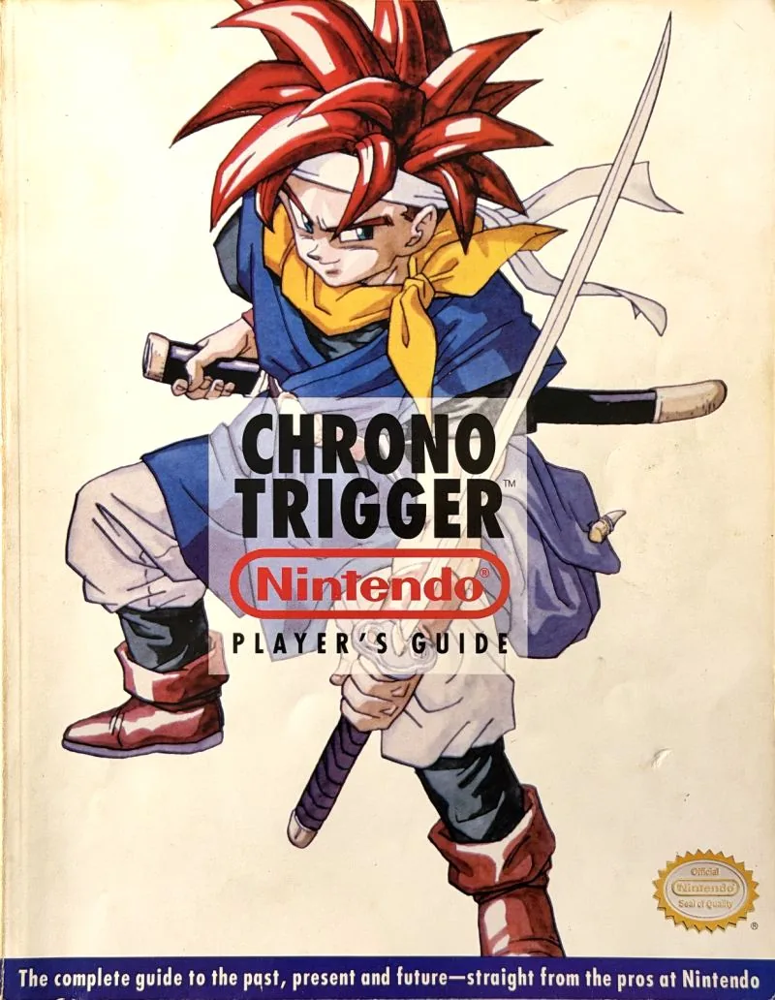
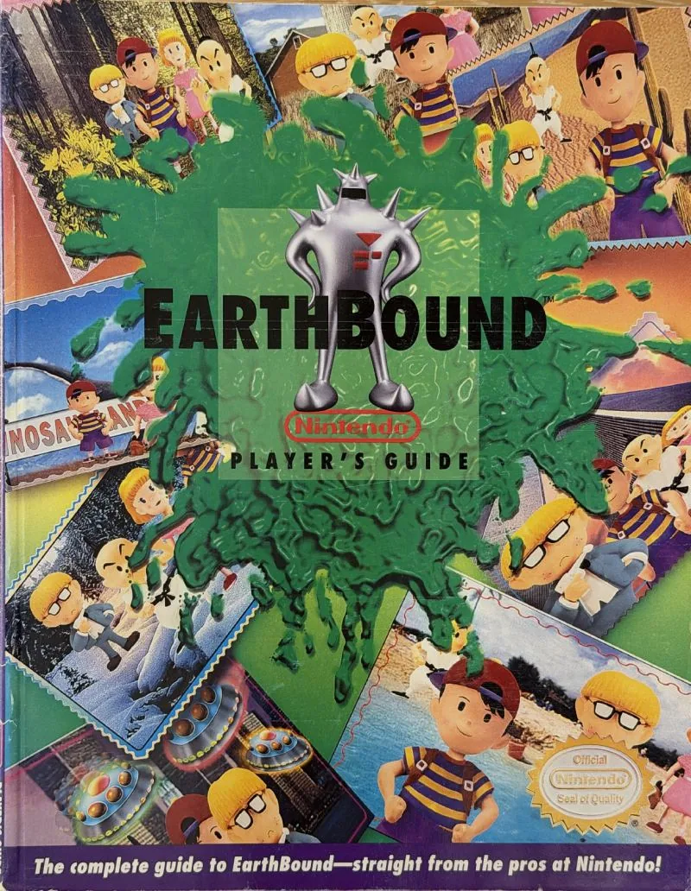
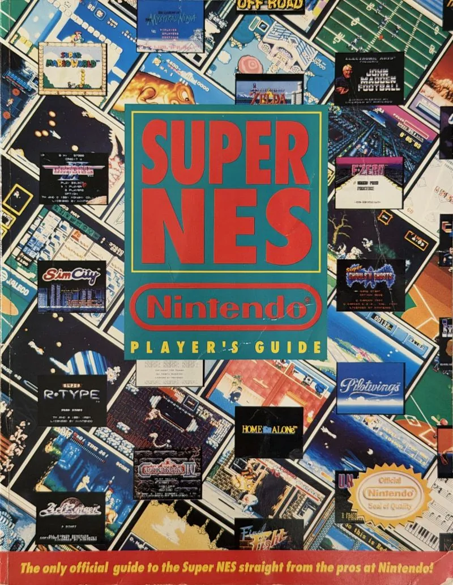

The Strategy Guide Shelf
A strategy guide was a book you bought because the game would not tell you where to go. Nintendo printed its own through Nintendo Power — hand-drawn maps, enemy tables and the routes the designers expected you to miss — and gave most of them commissioned cover art that appeared nowhere else. That is the part worth hanging on a wall: a shelf of these reads less like a stack of manuals than like a run of illustration. Twenty-two here, photographed one cover at a time.
Here for the monitor buying guide instead? What to Check Before You Buy a PVM-20L5 is over in Stories.
The shelf twenty-two guides
Twenty of these are Player’s Guides, the softcover format Nintendo sold one game at a time. Two are not: Final Fantasy is a Nintendo Power Strategy Guide — magazine format, with the volume number and the cover price printed right on the front — and Breath of Fire III is Prima’s Official Strategy Guide, the one book here from outside Nintendo.









The games themselves — fifty favorites, every one of them finished — are ranked in The Orlandu 50.
How Nintendo got them into the house
You could buy these books. But the magazine’s own pages show how often Nintendo gave them away, because a Player’s Guide was the best reason it had to make you subscribe.
In early 1992 a new subscriber picked one of four guides free, Mario Mania and the Super NES guide among them, and the offer called it “a $15 value.” Top Secret Passwords went out to every club member at no charge. By 1994 the guide and the magazine came as one deal: renew for $18 and the 128-page Super Metroid guide was free. By early 1995 the same $18 bought the Donkey Kong Country guide.
The ad for the A Link to the Past guide promised more than a walkthrough. It said the book would teach you the history of Hyrule.
| Guide | How Nintendo Power offered it | Issue |
|---|---|---|
| Mario Mania · Super NES | Free with a subscription, one of four guides to choose from | Vol. 32, January 1992 |
| The Legend of Zelda: A Link to the Past | Advertised as new, with the history of Hyrule as the selling point | Vol. 37, June 1992 |
| Top Secret Passwords | Mailed free to every club member the year before | Vol. 54, November 1993 |
| Street Fighter II Turbo · Super Mario All-Stars | Announced together as new 168-page guides | Vol. 54, November 1993 |
| Super Metroid | Free with an $18 club renewal; 128 pages | Vol. 60, May 1994 |
| Donkey Kong Country | The guide and a year of the magazine for $18 | Vol. 68, January 1995 |
| Yoshi’s Island · Chrono Trigger · Donkey Kong Country 2 | Promised for later that year in the editor’s letter | Vol. 76, September 1995 |
| Donkey Kong Country 2 · Super Mario RPG | Free with a subscription, one of three to choose from | Vol. 84, May 1996 |
| Donkey Kong Country 3 | Free for giving a gift subscription | Vol. 91, December 1996 |
From the subscription pages and advertisements in Nintendo Power, by volume. The other guides on the shelf did not turn up in the issues searched.